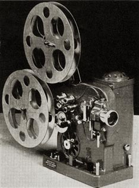

BOLEX MODEL P
9.5mm Projector
1932
- CONSTRUCTION: Grey enamel finish
- REEL CAPACITY: Reel arms accommodate 400 ft reels.
- THREADING: Manual threading and loop forming of film.
- POWER: Runs on 110v AC or DC power supply.
- LAMP: 250w or 400w lamp; Side located lamp housing reflects light at a 90 degree angle and through the lens.
- LENS: Interchangeable lenses
- SPEED: 16 frames per second; Notch title projection; Reverse projection; Rapid motor rewind.
- OTHER FEATURES: Direct draft ventilation and cooling of lamp; Adjustable base with tilting screws for proper alignment of projected image;
Notes and Comments
The Bolex Model P was a single gauge 9.5mm projector featuring a notch title stop device. Because 9.5mm was never a popular film format here in the United States, I have little information on this projector. Although it was advertised in the US, it was simply referred to as a "Bolex 9.5mm model", rather than the P or PA.
The projector was modified twice; the later version included a more powerful projection lamp. If you have more information on this model, please email me.
Model P
1932 -- 9.5mm Projector
The original version of the Model P featured a 250 watt lamp.
Model PA
1937 -- 9.5mm Projector
This may possibly be referred to as Model PA2. This later version used a 400
Watt lamp.